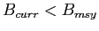
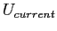
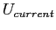

Next: Discussion Up: The knowledge-base for commercially-exploited Previous: Global Fisheries
Overall, 58% of stocks are estimated to be below
their biomass-related MSY BRP, that is
, and
30% are above their
exploitation-related MSY BRP,
 (n=240 stocks total; Figure 6).
Of the stocks for which biomass is currently estimated to be below
(n=240 stocks total; Figure 6).
Of the stocks for which biomass is currently estimated to be below  ,
53% have had their
exploitation rate reduced below
,
53% have had their
exploitation rate reduced below  , suggesting potential for
recovery (Figure 6). The remaining
47% of these stocks however,
still have excessive exploitation rates (Figure 6).
Encouragingly, 42% of all stocks are
estimated to be above
, suggesting potential for
recovery (Figure 6). The remaining
47% of these stocks however,
still have excessive exploitation rates (Figure 6).
Encouragingly, 42% of all stocks are
estimated to be above  , and 94% of the
stocks above
, and 94% of the
stocks above  also have  below
also have  below  .
.
The status of exploited marine stocks, as estimated from biomass- and
exploitaion-BRPs, varied widely depending on the management body
(Figure 7). Most European stocks (managed by
ICES) have biomasses less than  (79%), and over half of these
stocks (61%) still
have exploitation rates exceeding
(79%), and over half of these
stocks (61%) still
have exploitation rates exceeding  . Canadian stocks (managed
by DFO) also had low biomass (79%
. Canadian stocks (managed
by DFO) also had low biomass (79%
 ), but all but one of these has had its exploitation rate
reduced below
), but all but one of these has had its exploitation rate
reduced below  . In contrast, about half
(49%) of U.S. stocks (managed by
NMFS) are estimated to still be above
. In contrast, about half
(49%) of U.S. stocks (managed by
NMFS) are estimated to still be above  , and of the
45 stocks that are below
, and of the
45 stocks that are below  58% have exploitation
rates below
58% have exploitation
rates below  (Figure 7). In the New
Zealand and Australian waters, stocks managed by MFish and AFMA are
above
(Figure 7). In the New
Zealand and Australian waters, stocks managed by MFish and AFMA are
above  in 61% and
42% of cases, respectively. For
the stocks grouped as ``Atlantic'' in Figure 7 we
found that 5 of the
10 ICCAT stocks and
5 of the
10 of NAFO stocks were below
in 61% and
42% of cases, respectively. For
the stocks grouped as ``Atlantic'' in Figure 7 we
found that 5 of the
10 ICCAT stocks and
5 of the
10 of NAFO stocks were below  .
.
Stock-recruitment database administrator 2010-07-15